Плакаты, концепты и просто классный дизайн
[продуктовый дизайн/2025]
Плакаты [2024]
Периодически рисую в свободное время плакаты на разные тематики
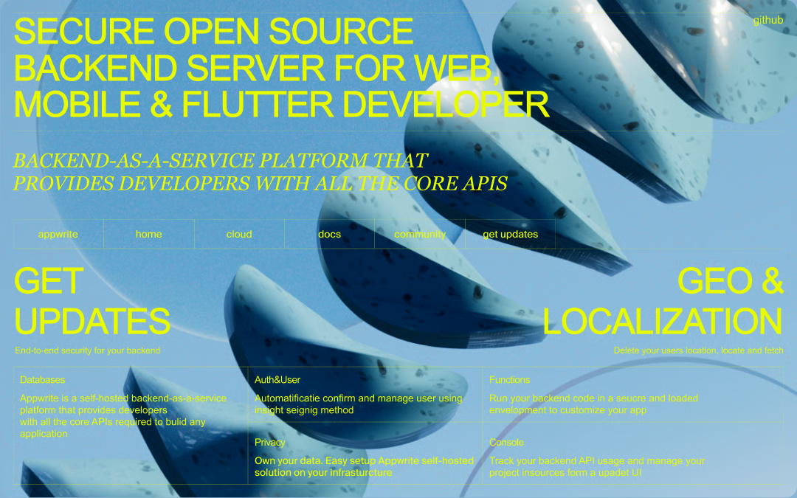
3Дшки [2022-2024]
Также иногда в свободное время люблю рисовать разные 3D-сцены в Сплайне
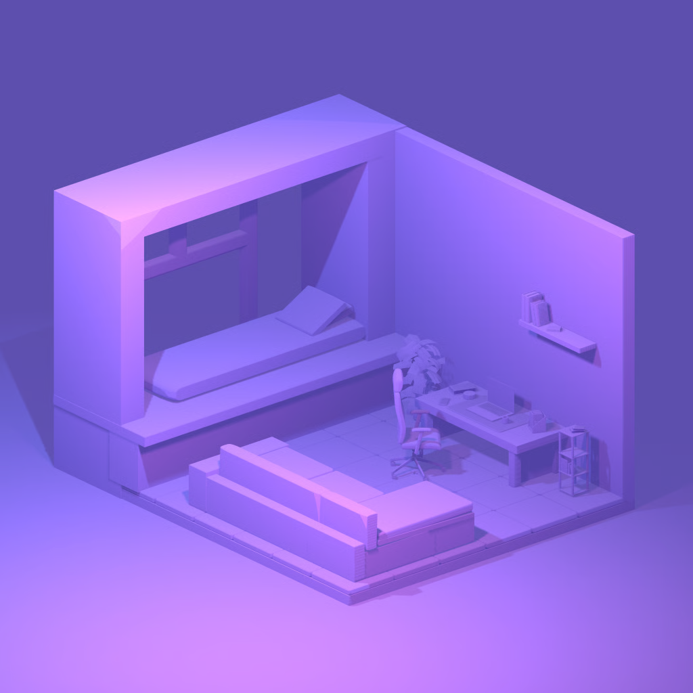
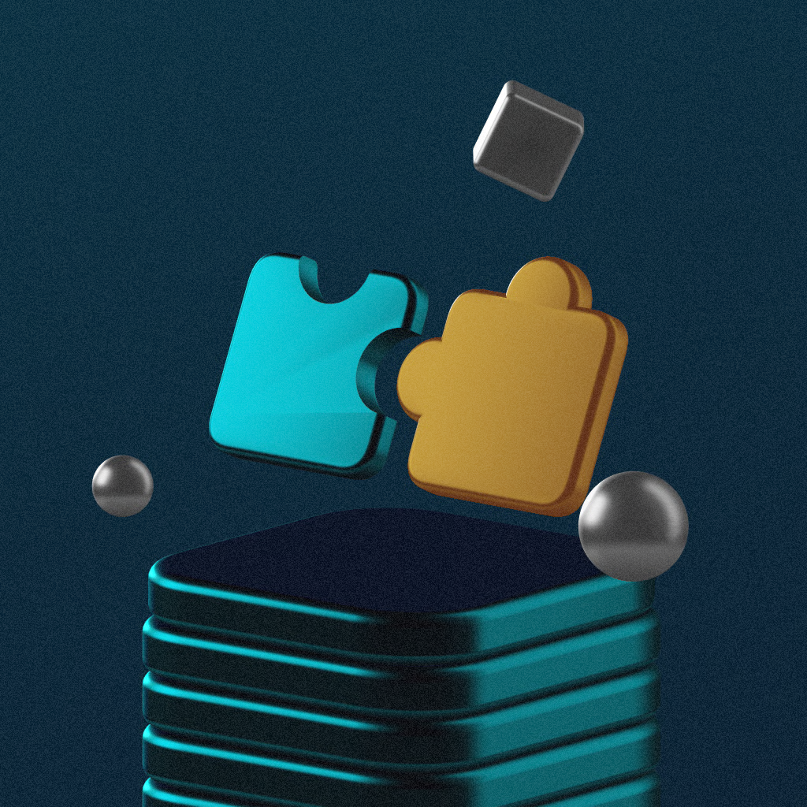
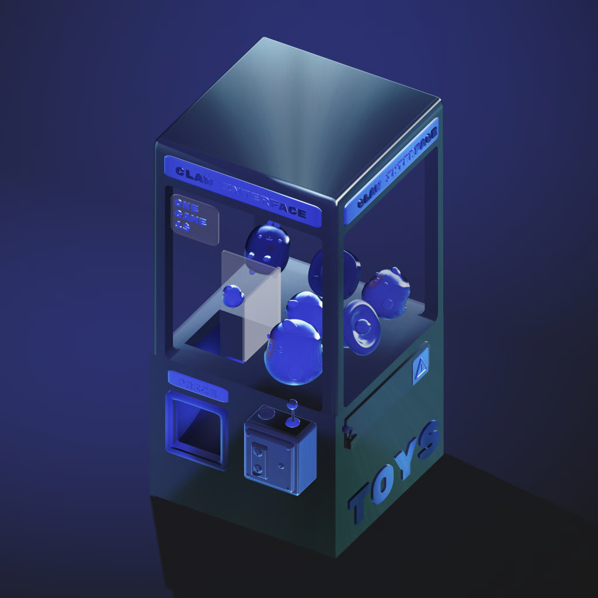
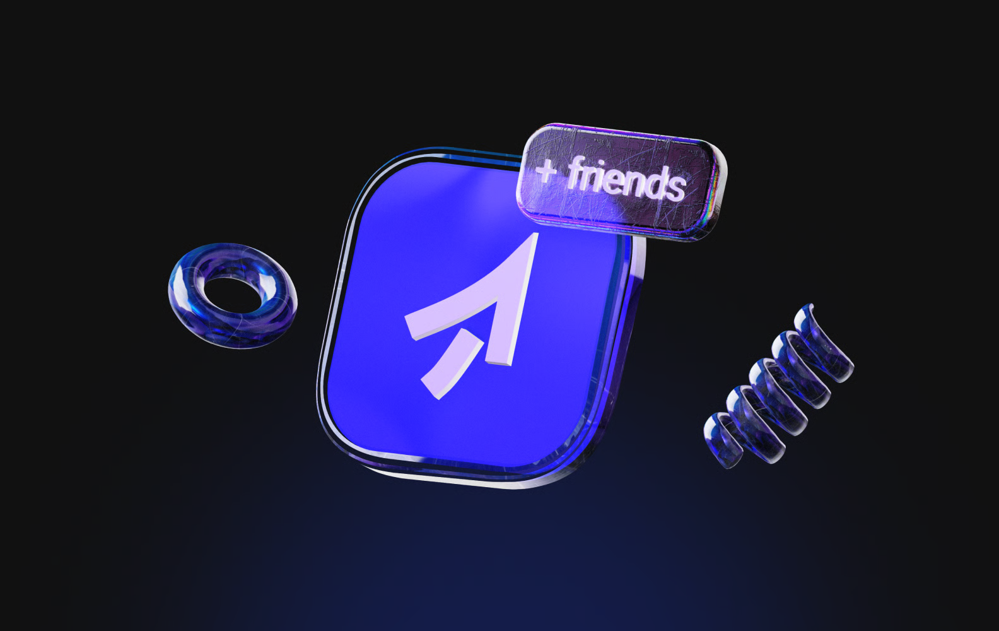
Концепты мобильных приложений
Бывают дни, когда прям нахлынивает вдохновение и хочется рисовать экраны мобилок, не думая о логике, а для тренировки UI
JoinMe [2024]
Бывают дни, когда прям нахлынивает вдохновение и хочется рисовать экраны мобилок, не думая о логике, а для тренировки UI
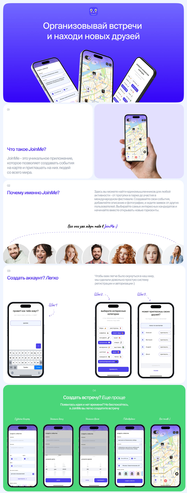
fotki [2025]
Сервис, который позволяет во время мероприятий скачивать фотографии на свой телефон. Добавили геймификацию, живой чат и яркий дизайн
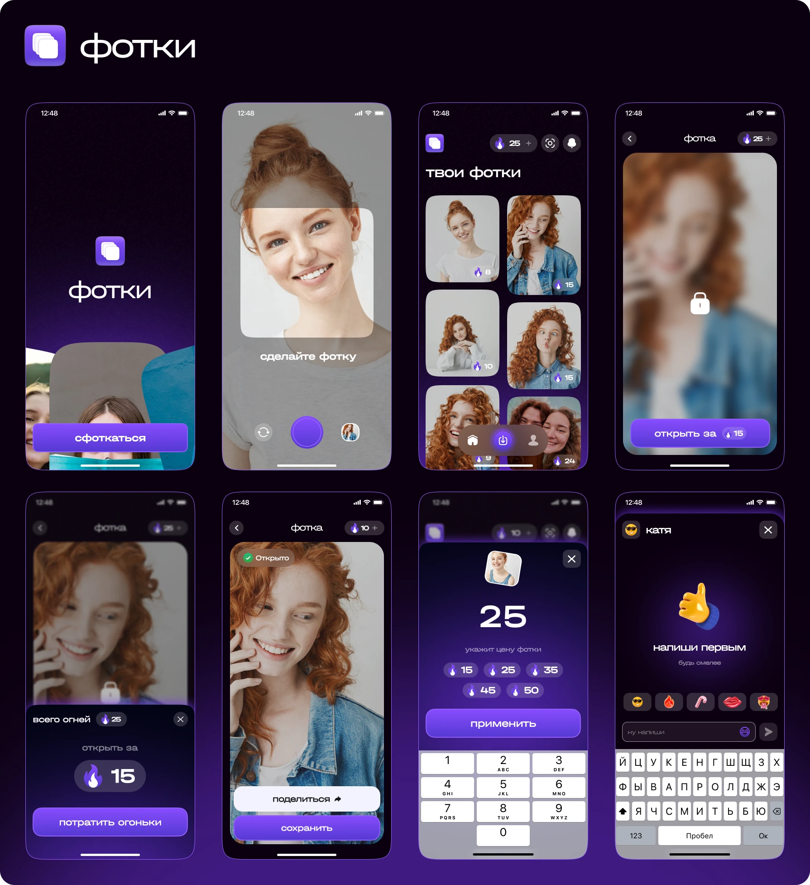
концепты приложений
Небольшая коллекция концептов мобильных приложений с 3D-сценами в Spline
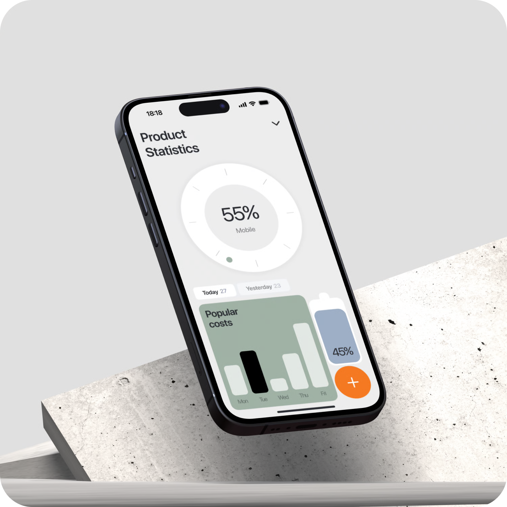
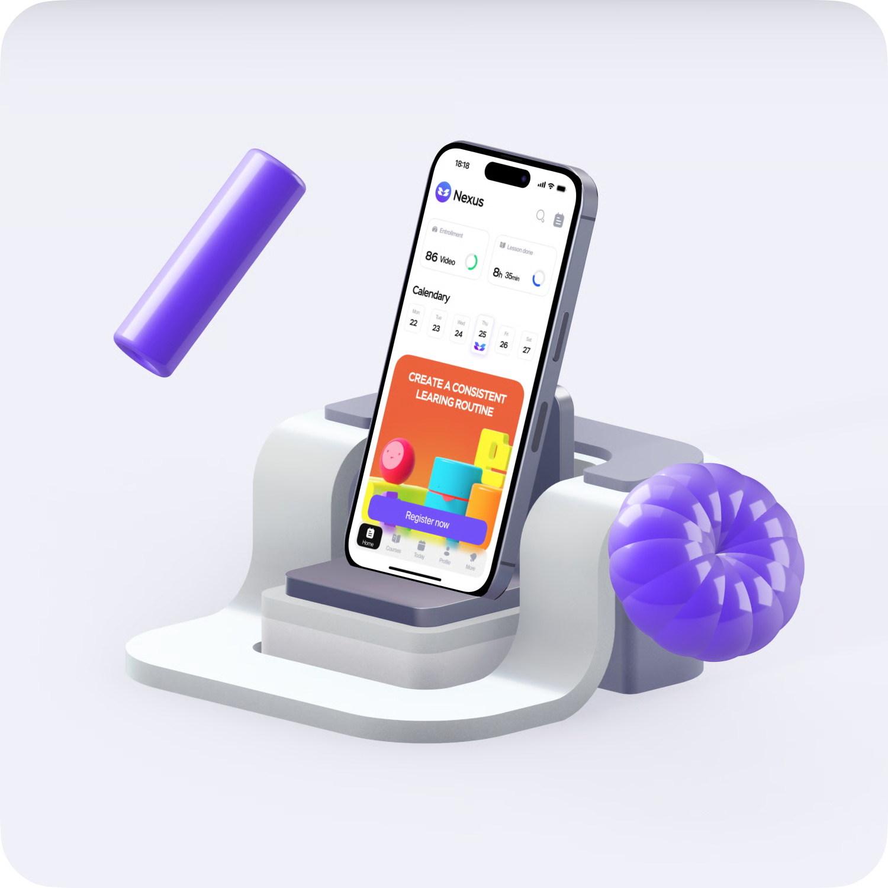
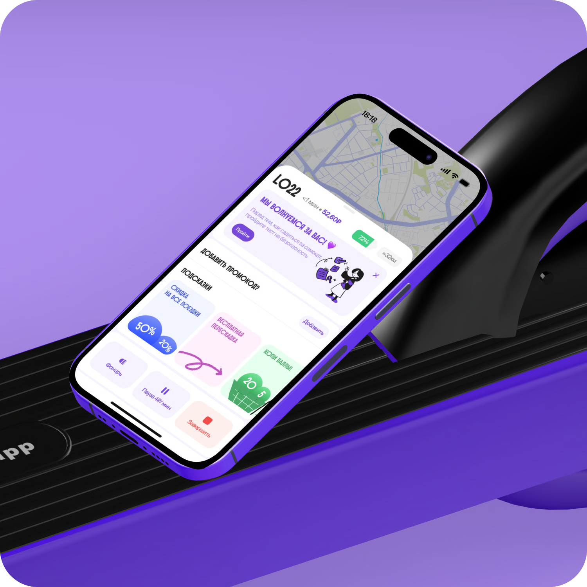
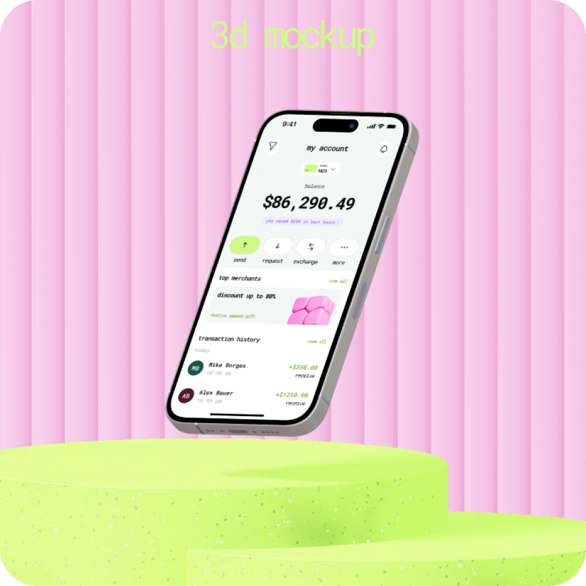
Коммуникационный дизайн
Иногда приходят проекты на фрилансе, где я рисую фирменные стили для разных ребят — вот пример фирменного стиля для магазина свежих овощей и фруктов «Со Вкусом!»
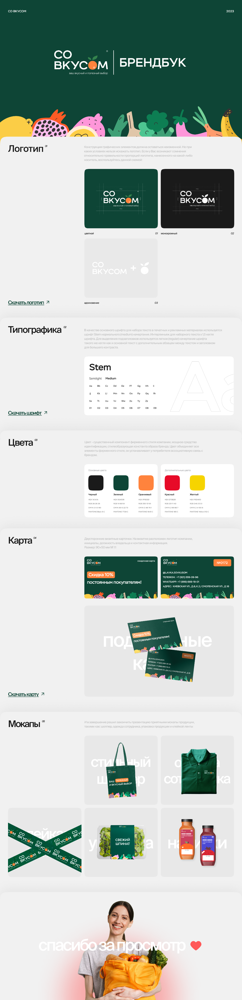
Я открыт для интересных проектов.
Отвечаю оперативно телеграмме 👋
Отвечаю оперативно телеграмме 👋
Благодарю за внимание❤️
написать в тг